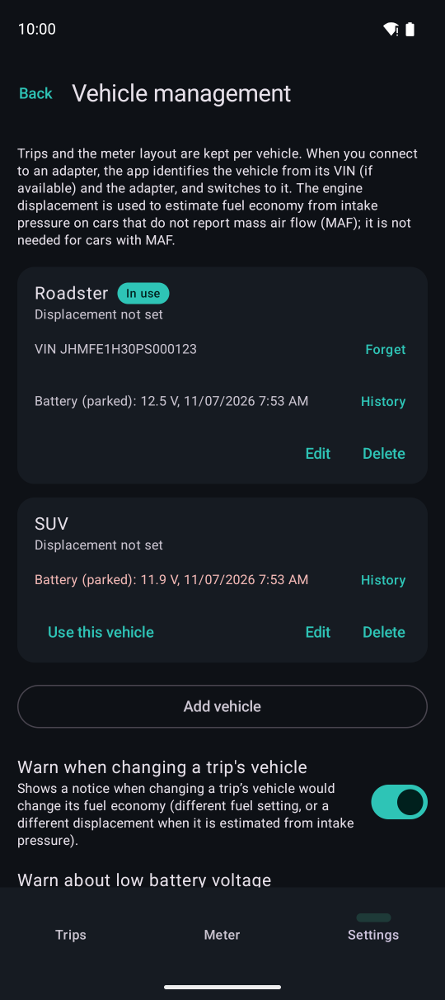
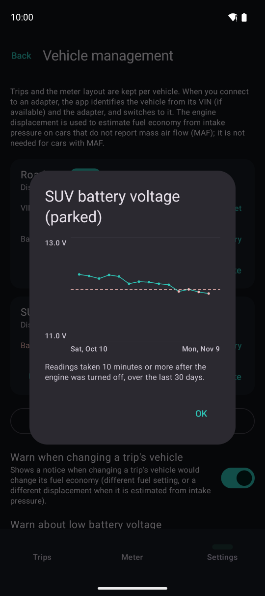

Vehicles and battery
Trips and meter layouts are kept separately for each vehicle. The app also watches the battery voltage of parked cars.

1234Settings → Vehicle management.
- 1Battery voltage while parked (last reading)
- 2Voltage over the last 30 days (Premium)
- 3Shown in red when at or below the warning level
- 4Use this vehicle (the one shown on the meter)
- The engine displacement is used to estimate fuel economy from intake pressure in cars without a mass air flow (MAF) sensor
- Mark diesel vehicles when editing them (used to estimate fuel economy in cars that do not report their fuel type)
- When you connect, the vehicle is identified from its VIN (if reported) and the adapter. For an unknown adapter, the app asks which vehicle it is
- The free plan allows up to 2 vehicles
Low battery warning
The app records the voltage the adapter reads in a parked car (10 minutes or more after the engine stopped) and notifies you when it stays low.
- Low: at or below the warning level (12.2, 12.0 or 11.8 V; 12.0 V by default). Very low: 11.6 V or lower
- A single reading is not enough. You are notified when two readings in a row within 24 hours are low
- At most once a day per vehicle, and not again at the same level until the voltage recovers to 12.4 V
- Some adapters read lower than the battery. The app shows and checks corrected values (see below). You can also change the warning level
- Voltage while the engine is running is not used
Correcting the adapter's voltage
Some adapters read lower than the actual battery voltage, in some cases by about 1 V. The app corrects this error, and uses the corrected values for the display and the warning.
- Automatic: while you drive, the app compares the adapter's reading with the voltage reported by the car and corrects the difference. The correction starts after you have driven for a while. It is not available on cars that do not report their voltage
- Tester reading: if you have a voltmeter, you can correct it more accurately. With the adapter left plugged in, measure the battery at least 10 minutes after turning off the engine, then open “History” in Vehicle management and choose “Enter tester reading”. This is available on every plan
- A tester reading takes priority over the automatic correction. Tap “Remove” to go back to the automatic correction. Measure again if you change the adapter, because the error differs from adapter to adapter
- If the tester shows that the battery really is low, the app tells you so. Have it charged or checked

Voltage history. The dashed line is the warning level.